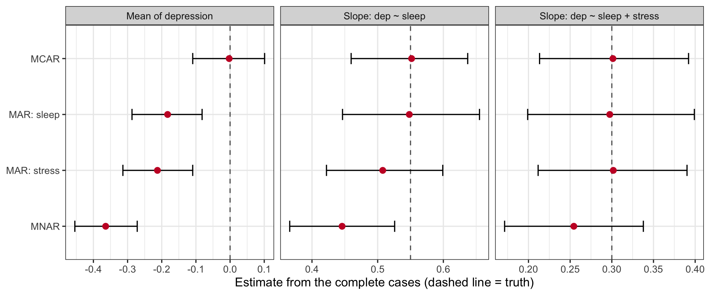
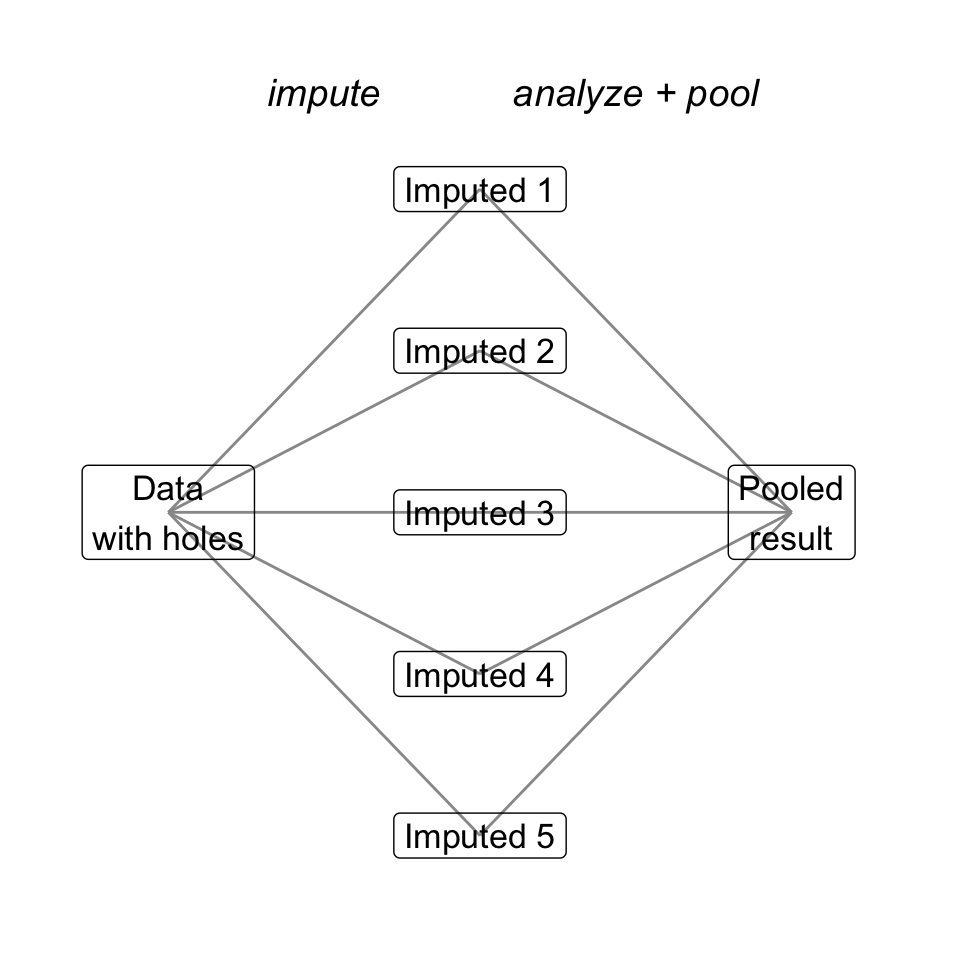
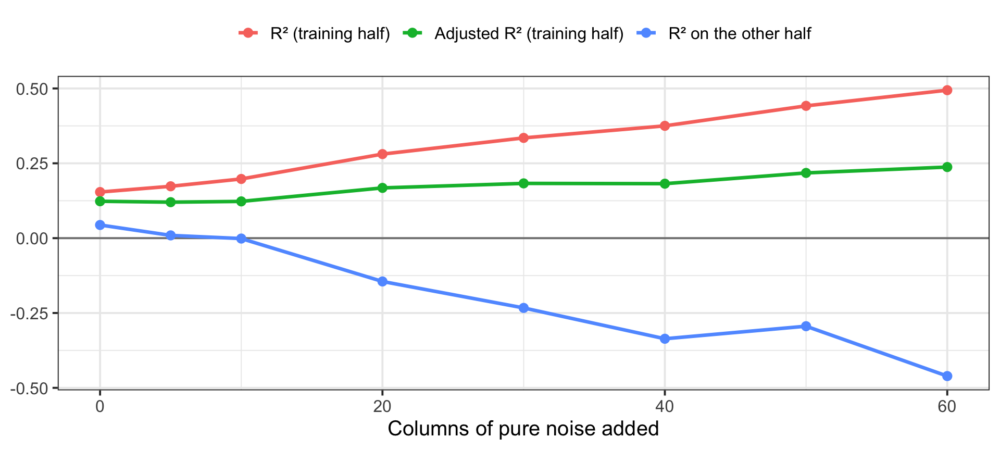

Date: November 5, 2026
Important
25 minutes · On myCourses · Closed notes
This one is 5 minutes longer than usual. Start when I say go.
When you finish: open today’s activity and do the Set up section so you’re ready for Part A.
Who is missing, and which model do you keep?
lm() quietly threw away 99 kids, and when that’s a problemYour final project starts for real this month.
0 or -99.Today is those two sections of the project, in order. The activity is a dress rehearsal on data you already know.
400 kids, measured three times. Last month we predicted Time 3 depression from Time 1:
# A tibble: 3 × 5
term estimate std.error statistic p.value
<chr> <dbl> <dbl> <dbl> <dbl>
1 (Intercept) 6.89 1.30 5.28 0.000000244
2 T1_Dep 0.375 0.113 3.32 0.00101
3 T1_SleepQual 0.471 0.192 2.45 0.0148 How many kids are in this model?
lm() drops every row with a missing value on any variable in the formula. No warning in tidy(). A one-line note at the bottom of summary(): “(99 observations deleted due to missingness).”
It’s why.
If the 99 kids who left are just like the 301 who stayed, losing them costs you power, and nothing else.
If they left because of something related to depression, the 301 who stayed are a different population, and everything you estimate describes the wrong people.
Rubin (1976) gave us three names for the “why.”
| The chance a value is missing depends on… | Example | |
|---|---|---|
| MCAR Missing Completely At Random |
Nothing. Pure bad luck. | A family moved; a survey page failed to load |
| MAR Missing At Random |
Something you did measure | Lower-SES families are harder to schedule, and you recorded SES |
| MNAR Missing Not At Random |
The missing value itself (or something you didn’t measure) | The most depressed kids skip the follow-up because they’re depressed |
Warning
“Missing at random” does not mean random. It means random once you account for what you measured. Blame Rubin’s naming. It’s dumb and confusing.
I can only show you what each kind does if I know the truth. So: simulate.
dep = 0.3 × sleep + 0.5 × stress + error (everything standardized, so the true mean is 0)sim_missing <- function(mech, n = 400) {
sleep <- rnorm(n)
stress <- 0.5 * sleep + rnorm(n, 0, sqrt(0.75))
dep <- 0.3 * sleep + 0.5 * stress + rnorm(n, 0, 0.8)
p_miss <- switch(mech,
"MCAR" = rep(0.3, n),
"MAR: sleep" = plogis(-1.2 + 1.5 * sleep), # cause is a predictor
"MAR: stress" = plogis(-1.2 + 1.5 * stress), # cause is measured, maybe not modeled
"MNAR" = plogis(-1.2 + 1.5 * dep)) # cause is the missing value itself
dep_obs <- dep
dep_obs[rbinom(n, 1, p_miss) == 1] <- NA
tibble(
`Mean of depression` = mean(dep_obs, na.rm = TRUE),
`Slope: dep ~ sleep` = coef(lm(dep_obs ~ sleep))[2],
`Slope: dep ~ sleep + stress` = coef(lm(dep_obs ~ sleep + stress))[2]
)
}
set.seed(1105)
mechs <- c("MCAR", "MAR: sleep", "MAR: stress", "MNAR")
sims <- map_dfr(mechs, ~ map_dfr(1:1000, function(i) sim_missing(.x)) %>%
mutate(mechanism = .x))
truth <- tibble(
estimate = c("Mean of depression", "Slope: dep ~ sleep", "Slope: dep ~ sleep + stress"),
true = c(0, 0.55, 0.30)
)sims %>%
pivot_longer(-mechanism, names_to = "estimate") %>%
group_by(mechanism, estimate) %>%
summarise(m = mean(value), lo = quantile(value, .05), hi = quantile(value, .95),
.groups = "drop") %>%
left_join(truth, by = "estimate") %>%
mutate(mechanism = factor(mechanism, levels = rev(mechs))) %>%
ggplot(aes(x = m, y = mechanism)) +
geom_vline(aes(xintercept = true), linetype = "dashed", color = "gray40") +
geom_errorbar(aes(xmin = lo, xmax = hi), width = 0.2) +
geom_point(size = 3, color = "#C8102E") +
facet_wrap(~ estimate, scales = "free_x") +
labs(x = "Estimate from the complete cases (dashed line = truth)", y = NULL) +
theme_bw(base_size = 15)
The rule
Listwise deletion is fine when the cause of missingness is in your model. When it’s measured but not in your model, put it in the model or use it to impute. When it isn’t measured at all, no method rescues you. Say so in your limitations.
MCAR vs. MNAR depends on values you don’t have. No test in your data can tell them apart.
What you can do:
# A tibble: 2 × 7
t3_status n SES Sex T1_Puberty T1_SleepQual T1_Dep
<chr> <int> <dbl> <dbl> <dbl> <dbl> <dbl>
1 Left by T3 99 -0.32 0.51 4.07 5.02 9.79
2 Stayed 301 0.12 0.51 4 5.09 9.86The kids who left look the same on Time 1 depression and sleep. They differ on SES.
Parameter | Log-Odds | SE | 95% CI | z | p
----------------------------------------------------------------
(Intercept) | -1.60 | 0.99 | [-3.56, 0.32] | -1.62 | 0.106
SES | -0.46 | 0.12 | [-0.71, -0.22] | -3.75 | < .001
Sex | -0.13 | 0.26 | [-0.64, 0.38] | -0.51 | 0.611
T1 Puberty | 0.24 | 0.19 | [-0.14, 0.62] | 1.23 | 0.218
T1 Dep | -0.02 | 0.06 | [-0.13, 0.10] | -0.28 | 0.776
T1 SleepQual | -0.06 | 0.09 | [-0.23, 0.12] | -0.66 | 0.508 Lower-SES kids were more likely to leave. That’s MAR on SES, at least for the part we can see. (Logistic regression is next week. For now: negative coefficient = less likely to be missing.)
Note
I simulated this dataset, so I can tell you the real answer: dropout depended on SES and Time 2 puberty. Both were measured. You will never get this confirmation with real data.
m_t3 wrong?Missingness depends on SES. Does SES predict Time 3 depression?
Basically zero. The cause of the missingness is unrelated to the outcome, so the 301 kids should give about the right answer.
“Should.” The way to check is to fill in the missing values honestly and see whether anything moves.
| Method | What it does | Verdict |
|---|---|---|
| Listwise deletion | Analyze complete cases only (R’s default) | ✅ Fine under MCAR, or MAR when the cause is in the model. Costs power. |
| Pairwise deletion | Each correlation uses whoever has both values | ⚠️ Different n for every number; can’t be used for a regression |
| Mean imputation | Replace each NA with the variable’s mean | ❌ Shrinks variance, weakens correlations, SEs too small |
| Last value carried forward | Use the person’s earlier score | ❌ Assumes nobody changed |
| Multiple imputation | Fill in many plausible values, analyze each, pool | ✅ Handles MAR, including causes not in your model |
| FIML | Estimate directly from all available data | ✅ Same idea as MI; common in SEM software |
t1 <- asap %>% select(T1_Dep, T1_SleepQual)
set.seed(2)
holes <- t1
holes$T1_Dep[rbinom(400, 1, 0.3) == 1] <- NA # MCAR, 30%
filled <- holes %>%
mutate(T1_Dep = if_else(is.na(T1_Dep), mean(T1_Dep, na.rm = TRUE), T1_Dep))
tibble(
Version = c("Truth (all 400)", "Complete cases", "Mean-imputed"),
n = c(400, sum(!is.na(holes$T1_Dep)), 400),
SD = c(sd(t1$T1_Dep), sd(holes$T1_Dep, na.rm = TRUE), sd(filled$T1_Dep)),
r = c(cor(t1)[1, 2], cor(holes, use = "complete.obs")[1, 2], cor(filled)[1, 2])
) %>%
mutate(across(c(SD, r), ~ round(.x, 2)))# A tibble: 3 × 4
Version n SD r
<chr> <dbl> <dbl> <dbl>
1 Truth (all 400) 400 2.15 0.26
2 Complete cases 280 2.15 0.26
3 Mean-imputed 400 1.8 0.21Even under MCAR, where listwise deletion is unbiased, mean imputation shrinks the SD and the correlation, then reports n = 400 as if you had measured everyone. Every filled-in kid sits exactly at the mean, with no uncertainty.

The noise is the point: it keeps the method honest about what you don’t know.
mice in three linesMultivariate Imputation by Chained Equations. Give it the analysis variables plus anything that predicts missingness (SES) or the missing values (Time 2 depression):
| term | b_listwise | se_listwise | b_MI | se_MI |
|---|---|---|---|---|
| (Intercept) | 6.886 | 1.303 | 6.727 | 1.183 |
| T1_Dep | 0.375 | 0.113 | 0.383 | 0.107 |
| T1_SleepQual | 0.471 | 0.192 | 0.478 | 0.181 |
Nearly identical, as the SES check predicted. The SEs are a bit smaller with MI: it used information from the 99 kids who left (their Time 1 and Time 2 scores).
Here they agree, and that is a result. It goes in your write-up:
Of the 400 participants, 99 (24.8%) were missing Time 3 depression. Missingness was more likely among lower-SES families (b = -0.46, p < .001) but was unrelated to Time 1 depression or sleep quality. Because SES was unrelated to Time 3 depression (r = .00), we report complete-case estimates; results from multiple imputation (m = 20) were nearly identical.
When they disagree, trust the one with fewer assumptions you can’t defend (usually MI, if you gave it the right variables), and report both.
Some missing values aren’t NA. Public datasets code them as numbers:
| Code | Means | If you forget… |
|---|---|---|
0 on a 1–7 scale |
Skipped | Pulls scale means toward 0 |
-99, -999, 999 |
Missing | An “age” of 999 moves the mean by years |
1998 in an age column |
A birth year typed into the wrong box | One 1,998-year-old |
Remember the DASS activity: in Part C, leaving the TIPI zeros in turned p = .097 into p = .021. Nothing in the output warned you.
Tip
For M2: audit every variable before you change anything: range(), table(), and the codebook. na_if(x, 0) fixes a code; it can’t fix one you never looked for.
Tip
~20 min · Pairs
split.qmd“Does sleep predict depression beyond demographics?”
“Which students will drop out next term?”
Most bad model building comes from doing the second job while claiming the first.
Add predictors in planned blocks. Each block answers one question.
Back to ASAP at Time 1 (everyone present, n = 400). Depression from:
The order is a claim about your question. Put sleep first and you’re asking a different one.
Analysis of Variance Table
Model 1: T1_Dep ~ Sex + SES + T1_Age
Model 2: T1_Dep ~ Sex + SES + T1_Age + T1_SleepDur + T1_SleepQual
Model 3: T1_Dep ~ Sex + SES + T1_Age + T1_SleepDur + T1_SleepQual + T1_PeerStress +
T1_AcadStress
Res.Df RSS Df Sum of Sq F Pr(>F)
1 396 1829.1
2 394 1668.4 2 160.68 19.3613 0.000000009579 ***
3 392 1626.6 2 41.78 5.0343 0.006938 **
---
Signif. codes: 0 '***' 0.001 '**' 0.01 '*' 0.05 '.' 0.1 ' ' 1Each row tests: is the drop in leftover error (RSS) bigger than chance, for the predictors we added?
\[ F = \frac{(RSS_{\text{smaller}} - RSS_{\text{bigger}}) / \text{df}_{\text{added}}}{RSS_{\text{bigger}} / \text{df}_{\text{residual}}} \]
Same logic as the F test for one model (Week 7). Now the “null model” is the previous block instead of the mean.
# A tibble: 3 × 3
Model R2 delta_R2
<chr> <dbl> <dbl>
1 Block 1: demographics 0.006 0.006
2 + Block 2: sleep 0.094 0.087
3 + Block 3: stress 0.116 0.023The p-value says each block is detectable. ΔR² says how much it matters. Report both.
Add Time 2 peer stress as a Block 4:
[1] 400 375R refused. If it hadn’t, you’d be comparing models fit to different people, and any difference could come from the 25 kids who disappeared, not from the new predictor.
[1] 375Then fit every block to analytic. Every model has the same 375 people, and anova() works.
Tip
This is why your project’s wrangle.qmd ends with an analytic dataset that’s complete on all of your analysis variables, not just the ones in Model 1. And it’s why the missing-data check from Part 2 matters: drop_na() is listwise deletion.
| Index | What it rewards | What it penalizes | Read it as |
|---|---|---|---|
| R² | Fit | Nothing. It never goes down when you add a predictor | Proportion of variance explained |
| Adjusted R² | Fit | Each predictor, a little | R² for the population, roughly |
| AIC | Fit | 2 per parameter | Lower is better. Expected prediction error on new data |
| BIC | Fit | log(n) per parameter (≈ 6 here) | Lower is better. Prefers simpler models as n grows |
AIC and BIC only compare models with the same outcome on the same rows. An AIC of 1714 means nothing alone. (Same reason you can’t compare AIC for raw and logged streams from Week 10: different outcomes.)
compare_performance()# Comparison of Model Performance Indices
Name | Model | AIC (weights) | BIC (weights) | R2 | R2 (adj.)
------------------------------------------------------------------
b1 | lm | 1753.2 (<.001) | 1773.2 (<.001) | 0.006 | -0.001
b2 | lm | 1720.4 (0.044) | 1748.4 (0.715) | 0.094 | 0.082
b3 | lm | 1714.3 (0.956) | 1750.2 (0.285) | 0.116 | 0.100AIC prefers Block 3. BIC prefers Block 2. They disagree when a block helps a little: AIC asks “does it predict better?”, while BIC asks “is it worth the complexity?”
A disagreement is not a crisis. It tells you the stress block is small. Your planned test (the F for Block 3) is the one you report, and you say ΔR² = .02.
| Difference | Support for the lower one |
|---|---|
| 0–2 | Barely any. Treat them as tied. |
| 4–7 | Clearly more |
| > 10 | Essentially none for the higher one |
Note
For nested, planned comparisons (Block 1 inside Block 2 inside Block 3), the F test is the main event. AIC and BIC earn their keep when models aren’t nested, or when you’re choosing among several defensible options.
“I have 40 variables. Let the data tell me which ones matter.”
That’s stepwise regression: add or drop predictors one at a time, keeping whatever improves AIC or p. It’s in every stats package, and step() does it in one line.
Let’s give it data where we know the answer: 100 people, 30 predictors, and every one is pure noise.
Parameter | Coefficient | SE | 95% CI | t(93) | p
-----------------------------------------------------------------
(Intercept) | 0.09 | 0.10 | [-0.11, 0.29] | 0.90 | 0.371
x7 | -0.26 | 0.11 | [-0.48, -0.05] | -2.41 | 0.018
x13 | 0.27 | 0.10 | [ 0.06, 0.47] | 2.57 | 0.012
x26 | -0.20 | 0.11 | [-0.41, 0.02] | -1.84 | 0.070
x5 | -0.22 | 0.11 | [-0.43, -0.01] | -2.05 | 0.043
x6 | 0.17 | 0.10 | [-0.03, 0.37] | 1.68 | 0.096
x27 | -0.13 | 0.10 | [-0.33, 0.06] | -1.40 | 0.165Six “predictors,” three of them significant, and the whole model has p = .004. None of it is real. In 200 runs like this, stepwise “found” at least one significant noise predictor 90% of the time.
It’s last week’s robustness problem, automated: try many versions of an analysis, keep the one that worked, and report it as if it were the only one.
ASAP, split in half. Fit on 200 kids, then predict the other 200. Keep adding columns of random junk:
set.seed(1105)
train_rows <- sample(400, 200)
junk <- matrix(rnorm(400 * 60), 400, 60, dimnames = list(NULL, paste0("junk", 1:60)))
asap_j <- bind_cols(asap, as_tibble(junk))
train <- asap_j[train_rows, ]
test <- asap_j[-train_rows, ]
oos_r2 <- function(m, d) 1 - sum((d$T1_Dep - predict(m, d))^2) /
sum((d$T1_Dep - mean(d$T1_Dep))^2)
base <- "T1_Dep ~ Sex + SES + T1_Age + T1_SleepDur + T1_SleepQual + T1_PeerStress + T1_AcadStress"
overfit <- map_dfr(c(0, 5, 10, 20, 30, 40, 50, 60), function(k) {
f <- if (k == 0) base else paste(base, "+", paste0("junk", 1:k, collapse = " + "))
m <- lm(as.formula(f), data = train)
tibble(junk = k,
`R² (training half)` = summary(m)$r.squared,
`Adjusted R² (training half)` = summary(m)$adj.r.squared,
`R² on the other half` = oos_r2(m, test))
})overfit %>%
pivot_longer(-junk) %>%
mutate(name = factor(name, levels = names(overfit)[-1])) %>%
ggplot(aes(junk, value, color = name)) +
geom_hline(yintercept = 0, color = "gray50") +
geom_line(linewidth = 1.2) + geom_point(size = 2.5) +
labs(x = "Columns of pure noise added", y = NULL, color = NULL) +
theme_bw(base_size = 15) + theme(legend.position = "top")
The only honest test of a model you chose by looking at the data is data you didn’t look at.
That’s your holdout
Your project explores 30% and locks 70% away. Explore freely, try things, overfit if you must. Next semester, one planned model meets data it has never seen. That’s when the p-value means what it says.
anova(); report R², ΔR², and the F for each block.Tip
~25 min · Pairs
| Model | R² | ΔR² | F change | df | p | AIC |
|---|---|---|---|---|---|---|
| 1. Demographics | .006 | 1753.2 | ||||
| 2. + Sleep | .094 | .087 | 19.36 | 2, 394 | < .001 | 1720.4 |
| 3. + Stress | .116 | .023 | 5.03 | 2, 392 | .007 | 1714.3 |
This table is the one your memo needs (“a comparison table: R² or AIC, and the test of each added block”).
We fit three nested models predicting Time 1 depression (N = 400; no missing data at Time 1). Demographics (sex, SES, age) explained little variance, R² = .006. Adding sleep duration and quality improved fit, ΔR² = .087, F(2, 394) = 19.36, p < .001. Adding peer and academic stress improved fit further, ΔR² = .023, F(2, 392) = 5.03, p = .007, an effect carried by peer stress (b = 0.19, p = .002). AIC favored the full model; BIC favored the sleep-only model, consistent with the small increment from stress.
Tip
Three things every block paragraph needs: who’s in it (N, and how missing data was handled), what each block added (ΔR² and its test), and an honest size, even when the test is significant.
Finish these in your notes:
📂 Final Project M1 — Dataset pitch, due Friday 11/6
📋 Lab 10, due Tuesday 11/10 at 11:59pm
📖 Readings for Logistic Regression:
📂 M2 is due Sunday 11/15
Today’s activity is M2 on a smaller scale: split, audit the missing-data codes, recode, check who’s missing, build analytic. If you can do it on the DASS data, you can do it on yours. Once your M1 is approved, split right away.